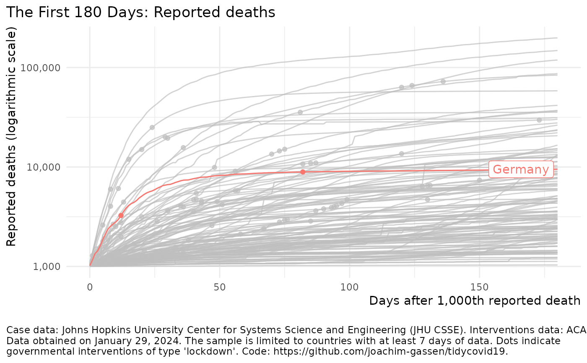

plot_covid19_spread.RdProvides a flexible visualization of the country-level Covid-19 spread, inpired by the displays created by John Burn-Murdoch from the Financial Times. Uses data from the Johns Hopkins University CSSE team (https://github.com/CSSEGISandData/COVID-19) and the ACAPS governmental measures database (https://www.acaps.org/covid19-government-measures-dataset).
plot_covid19_spread(data = download_merged_data(cached = TRUE, silent = TRUE), type = "deaths", min_cases = ifelse(type == "deaths", 10, 100), min_by_ctry_obs = 7, edate_cutoff = 30, data_date_str = format(lubridate::as_date(data$timestamp[1]), "%B %d, %Y"), per_capita = FALSE, highlight = NULL, intervention = NULL)
| data | The data frame to base the plot on. Should be a merged data
frame obtained by download_merged_data and defaults to
|
|---|---|
| type | The statistic that you want to plot. Needs to be either "confirmed", "deaths", or "revovered". |
| min_cases | Defines the zero point of your X axis (the 'event date'). Defaults to 10 cases for deaths and 100 cases otherwise. |
| min_by_ctry_obs | Limits the plot to countries that have at least that many days of dater since and including the event date. Defaults to 7. |
| edate_cutoff | The upper limit of the X axis in event days. Defaults to 30. |
| data_date_str | A date string to include in the annotation of the plot giving the time when the data was pulled. Defaults to the time stemp of the data. Note that you might run into issues with the default when running this in a non-english locale. Consider setting it by hand then. |
| per_capita | If |
| highlight | A character vector of ISO3c (ISO 3166-1 alpha-3) codes that
identify countries that you want to highlight. Using the
|
| intervention | If not default |
A ggplot2 object.
plot_covid19_spread()merged <- download_merged_data(cached = TRUE, silent = TRUE) plot_covid19_spread(merged, highlight = "DEU", intervention = "lockdown")plot_covid19_spread(merged, type = "recovered", min_by_ctry_obs = 10, edate_cutoff = 40, highlight = c("ITA", "ESP", "FRA", "DEU", "USA"), intervention = "soc_dist" )